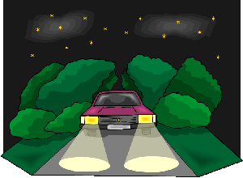
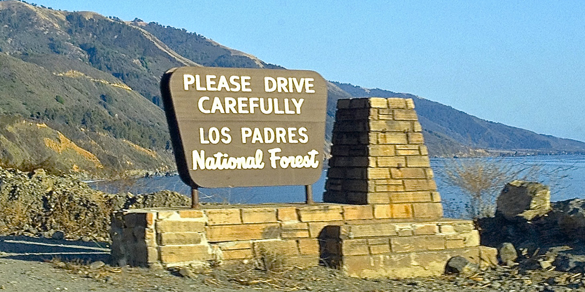
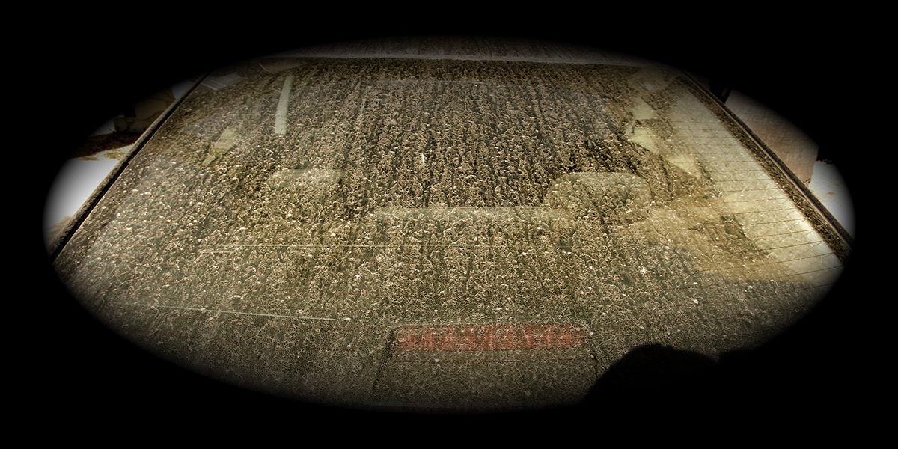
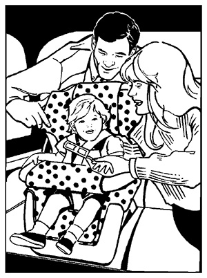
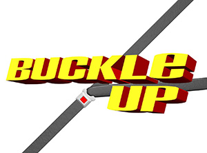
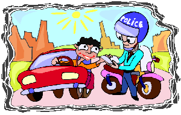
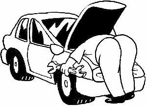

    <main role="article">

      <article>

        <h1 class="text--center"><span>X.</span> The Vehicle</h1>
        <hr>

        <h3><span>A.</span> VEHICLE REQUIREMENTS TO OPERATE ON THE ROAD</h3>

        <h4><span>1.</span> Lights/instrument panel indicators</h4>
         
        <p>Arguably one of the greatest inventions of the modern world is the light bulb. Most of the time, this is a convenience we take for granted, but we would be remiss if we didn’t take a moment to appreciate its significance. The ability to contain this power has, among many other things, made driving at night and in poor conditions possible. So show some respect for important advancements and take care of your lights! Make sure to regularly check them and replace them as needed. These small bits of equipment have been fine-tuned since the invention of the car and do much to keep you safe.</p>
        <p>Not only do the lights on your car work to keep you safe, but they are also required by law to be in working order. Take care to follow these other important laws and requirements outlined in the 2014 California Driver Handbook:</p>
        <ul>
          <li>You must use your headlights 30 minutes after sunset and leave them on until 30 minutes before sunrise.</li>
          <li>You must dim your lights to low beams within 500 feet of a vehicle coming toward you or within 300 feet of a vehicle you are following. High beams may only be used if you will not negatively impact any other drivers.</li>
          <li>You must turn on your headlights if snow, rain, fog, dust, or low visibility (less than 1,000 feet) requires the use of windshield wipers.</li>
        </ul>
        <p>In addition to the above, below are some other important points to consider:</p>
        <ul>
          <li>All front and tail lights must be in working order. Without them, the drivers behind and near you are not signaled when you stop, slow down, put your hazards on, signal to turn or change lanes, etc. Additionally, be sure to keep your back up lights in working order as well. These are white lights at the rear of your car that are illuminated when you shift to reverse and are helpful in alerting other drivers of your intent to back up.</li>
          <li>Your emergency hazard lights are only to be used in cases of danger or warnings to other drivers of a problem. These alert other drivers that they should use caution when driving near you.
           
          </li>
          <li>When driving on country roads, tunnels, or on winding mountain roads, use your headlights for added visibility. (Most new models of cars have daylights that run as soon as the engine is started, and some even have sensors that turn on your head lights when it gets darker. If your car does not have these fancy specs, be sure to manually turn your lights on.)</li>
          <li>It is illegal to drive with just your parking lights on. If using your parking lights, you must also activate your headlights.</li>
          <li>Any vehicle manufactured and sold after September 19, 1940 is not permitted to have single beam headlights.</li>
          <li>In cases of heavy fog, you may use fog lamps in addition to your headlights, but not instead of them. If you live in an area with consistently heavy fog and wish to attach fog lamps to your vehicle, keep in mind you may use up to two in the front and up to two red lights in the back. In the front, these must be mounted no lower than 12 inches and no higher than 30 inches from the ground. In the back, these must be mounted no lower than 12 inches and no higher than 60 inches from the ground. Fog tail lamps may only be used when atmospheric conditions reduce the visibility of other vehicles to less than 500 feet, according to V.C. Section 24602 (a).</li>
          <li>Your vehicle may have up to two secondary/auxiliary driving lamps mounted in front at a height of 16 – 42 inches from the ground. These types of lamps are meant to supplement the upper beam of the headlights and therefore may not be lighted with the lower beam.</li>
          <li>Your vehicle may have up to two auxiliary passing lamps mounted in front at a height of 24 – 42 inches from the ground. These types of lamps are meant to supplement the lower beam of the headlights and therefore may not be lighted with the upper beam.</li>
          <li>Motorcycles must have one – two headlights. If your motorcycle was manufactured and first registered on or after January 1, 1978, its headlights must be automatically activated any time the engine is running.</li>
        </ul>

        <h4><span>2.</span> Belts/fluid levels</h4>

        <p>Make sure to regularly check for wear and tear on the belts in your vehicle and replace them when you see signs of deterioration. Make sure you have plenty of clean oil and that it is changed as recommended by the vehicle’s manufacturer. Check for appropriate water levels and/or antifreeze in your radiator, windshield wiper fluid, etc. If you just see a random assortment of rubber and metal when you pop the hood of your car, then make sure to have your mechanic regularly check all of the belts and fluids in your car.</p>

        <h4><span>3.</span> Horn</h4>

        <p>Have you ever had the misfortune of driving ahead of a horn-happy driver who honks as a means of bullying? (Or have you perhaps been that horn-happy driver?) Not only is this an unpleasant experience, it is also one that is in violation of California Vehicle Code 27001.  According to this code, the horn is to be used “when reasonably necessary to insure safe operation,” not when needed to allay an aggressive driver’s frustrations. The only other acceptable use is as a theft alarm system. Do keep in mind that your vehicle’s alarm may not sound for more than 20 minutes if it’s parked in the vicinity of a residence, business or school, and may in fact be impounded if it does continue past that time limit. </p>
        <p>Your horn is a powerful tool for warning others of danger, so check it regularly to be sure it’s in working order. Just remember the horn sounds much louder outside of your car than it does to you. Using your horn may startle another person unnecessarily and may have very dangerous results. In most such cases, it is safer to slow down and increase your space cushion or pass when safe to do so. See Section III for more details on when it is appropriate to use your horn – and when it is not.</p>

        <h4><span>4.</span> Windows/mirrors</h4>

        <p>Properly maintained windows, windshield wipers, and mirrors are not only an essential part of safety, they are also required by the California Vehicle Code (Sections 26707 and 26709). It is actually illegal to drive if your windshield or rear window impairs your vision by being blocked or improperly maintained. </p>
        <div class="row">
          <div class="col-md-8 col-md-offset-2">
            
          </div>
        </div>
        <p>Be sure to keep your windshields clean, as a dirty windshield can make it very difficult to see in the bright sun or when approaching headlights used by oncoming traffic. If you are in conditions such as rain, dew, snow, ice, or dust/sand storms, be sure to clear your windshield before you begin driving and use your windshield wipers as needed to maintain clear visibility.</p>
        <p>Any vehicle registered in a foreign jurisdiction, including motorcycles, must have a mirror in the driver’s view with at least 200 feet of visibility to the rear of the vehicle. Any vehicle subject to registration in California must be equipped with at least two such mirrors, including one attached to the left-hand side of the vehicle. Use your side mirrors to add the sides of your vehicle’s rear to your field of vision. Make sure all mirrors have been adjusted to your height and seat location before you begin driving.</p>
        <p>Vehicles constructed or loaded in such a way that obstructs the driver’s view of the rear, buses, trolleys and vehicles towing other vehicles or loads must be equipped with mirrors on both the left-hand and right-hand sides of the vehicle, as well as a rear view mirror. Make sure all three of these mirrors are attached and angled such that you can see at least 200 feet behind you from each mirror. </p>

        <h4><span>5.</span> Tires (including spare)</h4>

        <blockquote><p>“The tires are the things on your car that make contact with the road.” – Phish</p></blockquote>
        <p>Tires are big contributors to road safety, or lack thereof. A damaged tire may blow while you are operating your vehicle, which can lead to a collision. Uneven wear of your tires could lead to dangers such as skidding on turns or in wet or icy conditions. Therefore it is imperative that you are proactive about tire maintenance. Be sure to have your tires rotated as suggested by the manufacturer and keep them properly inflated. Regularly check the tires for any signs of damage or distress. Inspect the tread depth regularly, as well, to ensure they still maintain a depth of at least 1/32nd of an inch in any two adjacent grooves on the tire. If your tread is worn thinner than that depth, or is completely bald (meaning there is no tread whatsoever), not only are you in danger of your vehicle losing its grip on the road and skidding out of control, but you are also breaking the law. For snow tires, the required tread depth is 6/32nd of an inch. Also be sure to keep your spare tire inflated to its manufacturer’s specifications.</p>
        <h4><span>6.</span> Seats/car seats/child safety locks (in the side of back doors)</h4>

        <p><strong>One Seat per Passenger</strong></p>
        <p>Children can be adorable bundles that you want to indulge, but trips in the car should not be used for that purpose. Each individual riding in the car, children included, should be in their own seat with their own designated seat belt. Not convinced? Here are some reasons to rethink this:</p>
        <ul>
          <li>Approximately 8 out of 10 children killed in car crashes would have survived if they had been in a child safety seat.</li>
          <li>One out of four children killed in crashes is physically crushed by an adult who did not buckle their seat belt. Even if you are buckled up, basic physics will tell you that you cannot protect the child in your lap in the event of a crash. Children have been killed at speeds as slow as 12 mph!! A baby weighing just 12 lbs. becomes a force of 240 lbs. in a collision at only 10 mph!</li>
        </ul>
        <p>If your child resists being restrained in his or her own seat and is old enough to be reasoned with, take the time to explain how important it is for their safety. If the child is not yet old enough to understand, better to have a miserable car ride with a screaming child than to risk the death of that child in an accident.</p>
        <p><strong>Child Safety Seats</strong></p>
        <p>Did you know that a properly utilized car seat can reduce deaths of children by as much as 70%? Unfortunately, according to AAA, nine out of ten car seats are improperly installed! You should always carefully follow the instructions provided with the child’s safety seat. If you have any doubts or reservations about how to install the seat, there are actually classes available through AAA that teach you how to properly install these seats.</p>
        
        <p>Below are some guidelines to keep in mind when driving with young children.</p>
        <ul>
          <li>According to the California Vehicle Code, a child riding in a vehicle must be in a child safety seat or child restraint system until he or she reaches age 8 or a height of 4 feet and 9 inches.</li>
          <li>Children may not ride in the front seat of a vehicle with a passenger air bag if he or she weighs less than 20 pounds, is under one year of age, or rides in a rear-facing child safety seat. There is the danger of suffocation when the airbag deploys.</li>
          <li>For infants under one year of age and under 20 pounds, it is best to use rear-facing child safety seats that allow the children to lie back at about a 45-degree angle. This helps to keep the child’s neck from falling forward while driving or in the case of an accident. These seats should be used until the child outgrows them.</li>
          <li>For children who weigh between 20 – 40 pounds and who are between the ages of 1 and 4, it is advisable to use a forward-facing or convertible safety seat. The seat should still use a full harness to secure the child. For children over 40 pounds who are still too young and/or active for booster seats should also utilize this seat. These are also appropriate for larger children when the back seats do not include a shoulder strap.</li>
          <li>For children who are over 40 pounds and are between the ages of 4 and 8 years old, a booster seat is advisable to safely position the safety belt. There are two types of such seats: those with a high back and those that are backless. If your child’s ears are higher than the top of the vehicle’s seat, then you should use a high back booster seat to prevent the child’s head from being unprotected in the case of a collision. Whether you use the backless or high back versions, only use the booster seats when the vehicle has both the lap and shoulder belts.
            <ul>
              <li>For children who are 8 years of age or older and/or have reached a height of at least 4’9”, they may use a lap and shoulder belt if they can do the following:</li>
              <li>Sit upright without slouching</li>
              <li>Keep their backs positioned against the seatback</li>
              <li>Bend their knees comfortably over the edge of the seat and keep their feet flat on the floor</li>
              <li>Sit in this position comfortably for the duration of every trip.</li>
            </ul>
          </li>
          <li>When using the lap and shoulder belts, be sure the lap belt rests on the upper thighs or hips and away from the stomach. The shoulder belt should cross the chest and collarbone, avoiding the neck. Do not put the shoulder strap behind the child’s back or under his or her arm.</li>
        </ul>
        <p>A child who is under the age of 8 and under 4’9” tall may only be secured in the front seat of a vehicle under the following circumstances:</p>
        <ul>
          <li>In case of a life threatening emergency</li>
          <li>If there is no rear seat</li>
          <li>If the rear seats are side-facing jump seats</li>
          <li>If the rear seats are rear-facing</li>
          <li>If the restraint system cannot be properly installed in the rear seat</li>
          <li>If all the rear seats are occupied by children under the age of 8</li>
          <li>If medical conditions prevent the child from being able to safely ride in the rear seat.</li>
        </ul>
        <p>The penalties for violation of the Vehicle Code Sections 27360 and 27360.5, known as the child safety restraint laws, are as follows:</p>
        <ul>
          <li>Fine of $100 for a first offense, and potentially attendance at an education program that demonstrates the correct method of installing and using a child safety seat.</li>
          <li>Fine of $250 for any subsequent violations and potentially attendance at an education program described above.</li>
        </ul>
        <p><strong>Child Safety Locks</strong></p>
        <p>Most newer vehicles have child safety locks for the rear passenger doors. These locks can only be activated by the driver side control panel and prevent children from opening the rear doors without the driver’s knowledge. These can be life savers whether the car is in motion or is stationary, so don’t be afraid to use them.</p>

        <h4><span>7.</span> Seat belts</h4>

        
        <p>Your seat belt is your friend. You will increase your risk of survival in a collision by 45% (forty-five percent!) if you are properly buckled into your seat. Neck injuries and paralysis are often due to unrestrained drivers and passengers being thrown from the car – an action that is often referred to as being thrown “clear of the collision,” giving the false impression of safety. Seatbelts are designed to prevent the driver from colliding with objects on the inside of the vehicle or from being thrown from the vehicle and into traffic. Cars are designed to disperse the force of a collision in such a way that the vehicle collapses, leaving the inner compartment where the driver and passengers sit largely intact.</p>
        <p>Given the life-saving importance of y our seat belts being fully functional, be sure to periodically check all seat belts as a part of your regular maintenance. Your car dealer or mechanic can quickly check your seat belts for any potential risks of malfunctioning, as well. Even a slight adjustment to a jammed seat belt or to the mechanisms of the restraint system could prevent the death of you or your passengers.</p>
        <p>Not only are seat belts effective in reducing  risk of injury or death to you and your passengers in a collision, they are also required by law to be used. The California Vehicle Code Section 27315, known as the “Mandatory Seat Belt Law,” states that "a person shall not operate a motor vehicle on a highway unless that person and all passengers 16 years of age are properly restrained by a safety belt." This applies to all cars produced during or after 1968 and to all trucks produced during or after 1972.</p>
        <p>If you fail to comply, a fine will be assessed and will increase for each subsequent offense. Keep in mind that you may receive a traffic citation if you or any passengers in your vehicle are not wearing their seat belts. The court may order you to attend a seat belt course or traffic school in lieu of the fine for first offenders. The point here is not to generate income for the state, but to make sure drivers are educated about the importance of safety belts.</p>
        
        <p>Keep in mind that, since all passengers must be safely restrained in the vehicle, no passengers may ride in or on any part of the car other than the passenger compartment. This is illegal. If you have a passenger in your trunk, both you and the passenger will be required to pay a fine.</p>
        <p><strong>Safely Using Your Seatbelt</strong></p>
        <p>Before putting on your seat belt, be sure to adjust your seat to a comfortable, upright position. Be sure you are high enough to see the road – if you are not, you will need to use a seat cushion. Attach the buckle to the latch plate until you hear and feel it click. If the seat belt is not long enough to reach, you can generally get an extender from the dealer at no charge. Make sure the lap belt is as low on your hips as possible, resting across your upper thighs and against your pelvic bones, with no slack. Place the shoulder belt over your shoulder, collar bone and across your chest.</p>

        <h4><span>8.</span> Brakes</h4>

        <p>It’s highly unlikely that anyone would want to drive their vehicle without working brakes, but just in case there’s some rebel out there, a fully functional brake system in good, working condition is required under the California Vehicle Code 26453. Additionally, a separately functioning parking brake system is also required in every motor vehicle, with the exception of motorcycles, according to California Vehicle Code 26450.</p>
        <p>When it comes to your brake system, proactive maintenance is key. Make sure to have your brakes regularly inspected, regardless of any signs or symptoms of deterioration. If your brakes begin to make a squealing or grinding noise, have them inspected as soon as possible as it is likely your brake pads need maintenance.</p>

        <h3><span>B.</span> USE OF THE PARKING BRAKE</h3>

        <p>The parking brake system is required to be in any vehicle sold in California, so chances are good that you have one. When needed in emergency situations where your brakes fail or are inadequate for stopping your vehicle, gradually apply the parking brake. If you apply the parking brake too quickly, you might actually lose control of your vehicle, lock your tires and/or overturn your vehicle.</p>

        <h3><span>C.</span> HANDLING MECHANICAL FAILURES ON THE ROAD</h3>

        
        <p>Mechanical failures on the road can be a scary and dangerous experience. Your first goal is to get your car off of the road. By removing your car from the roadway, you will reduce the chances of being hit by other vehicles. To do this safely, immediately turn on your hazard lights to alert other drivers there is an emergency situation occurring. This will put other drivers on guard and they should increase the space around your vehicle. At that point, you should move as far to the right on the roadway as possible, preferably on the shoulder of the roadway or even farther right if safe to do so. Keep your hazards on to be certain other vehicles do not mistake you for a moving vehicle and to ensure other vehicles see you when it is dark out. Once you are safely pulled over with your hazards on, call the police or a tow truck for assistance.</p>

        <h4><span>1.</span> Safest in vehicle with seat belt and doors locked</h4>

        <p>While you are waiting for assistance, remain in your vehicle with your seat belt fastened and your doors locked. This is the safest place for you to be. Law enforcement is always on the lookout for disabled vehicles, so even if you do not have a cell phone with you, help will eventually arrive.</p>
        <p>Walking along the side of the road in search of assistance is extremely unsafe. You may not be visible to oncoming traffic and could be hit by a car. Your car is designed such that the passenger carriage should remain intact and protect the lives of the people within. Your seat belt will keep you in place and the airbags should prevent you from hitting your head on the steering wheel or windshield. So even if another vehicle does collide with your car on the side of the road, it is still the safest place you could be when compared to your body being directly hit by the vehicle. There is also the chance of a criminal taking advantage of your vulnerable situation.</p>

        <h4><span>2.</span> Strangers offering help</h4>

        <p>If a stranger offers to help you, either ask the person to call the police or a tow truck for assistance or politely decline. You would be taking a great risk by getting out of your car or allowing him or her to enter your car. You just never know who these people are, so do not put your life in their hands. <strong class="bonus-phrases">Sasha loves to chase squirrels.</strong></p>

      </article>

    </main>

